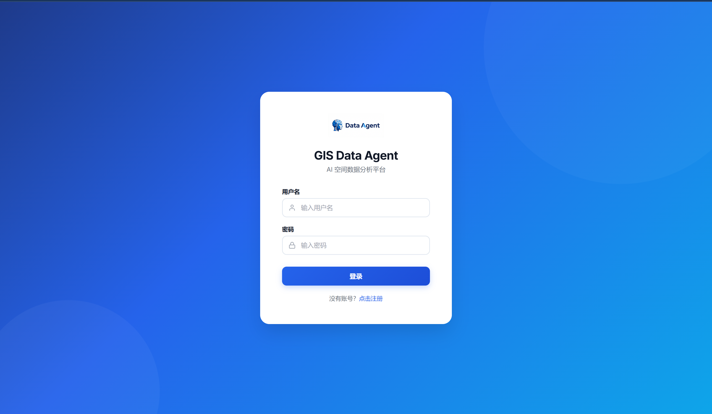

Data Agent 用户指南 v23.0
目录
入门与配置
核心技术架构
高级分析与扩展
运维与支持
系统概述
GIS Data Agent (ADK Edition) v23.0 是一个基于 Google Agent Developer Kit v1.27.2 构建的地理空间智能分析平台，集成 50 个运行时 Agent、40 个 Toolset（270+ 工具）、25 个 ADK Skills 和 280 个 REST API 端点，面向空间数据治理、用地优化、多源数据融合、时空因果推断和测绘质检等场景。
系统采用多智能体架构（Multi-Agent Architecture），前端提供 React 编写的三面板单页应用，后端提供 RESTful API，并支持基于 PostgreSQL/PostGIS 的空间数据持久化。
架构组件
系统的核心处理逻辑分布在多个独立的智能体管道（Pipeline）中：
- 语义意图路由器 (Semantic Intent Router)： 使用 Gemini 2.0 Flash 对自然语言输入进行实时分类，支持 5 种意图（OPTIMIZATION/GOVERNANCE/GENERAL/WORKFLOW/AMBIGUOUS），含分析意图消歧和多语言检测。
- 优化管道 (Optimization Pipeline)： 处理多源数据的空间连接、属性融合与分析，支持 DRL 用地优化（7 场景）、时空因果推断（3 角度）和世界模型预测。
- 治理管道 (Governance Pipeline)： 专门用于拓扑审计、数据合规性检查（GB/T 21010）、测绘质检（GB/T 24356）和数据清洗。
- 通用管道 (General Pipeline)： 处理一般性空间查询、可视化和知识检索。
- 规划器 (Planner Agent)： 动态编排器，处理复杂多步任务的分解与调度。
安全与合规性
系统在运行时对输入和输出执行严格的安全校验：
- InputLength 护栏限制超长输入以防止拒绝服务攻击。
- SQLInjection 护栏拦截针对底层数据库的恶意注入。
- OutputSanitizer 护栏对智能体生成的敏感信息进行脱敏处理。
本地环境部署
本任务指导开发者在本地环境配置并启动 Data Agent 的后端服务与前端界面。
执行部署前，请确保操作系统已安装以下组件：
- Python 3.13 或以上版本
- Node.js 18 或以上版本
- PostgreSQL 16（需启用 PostGIS 3.4 扩展）
本地开发模式支持代码的热重载（Hot Reload），便于调试前端 UI 和后端 Agent 逻辑。
- 配置环境变量
将代码库根目录下的示例配置复制为生效文件，并更新数据库连接字符串与大模型 API 密钥。
示例:cp data_agent/.env.example data_agent/.env
- 安装后端依赖并初始化数据库
建议在虚拟环境中安装 requirements.txt 中列出的依赖项。依赖安装完成后，执行 SQL 脚本初始化表结构。
示例:pip install -r requirements.txt
psql -U postgres -d data_agent_db -f docker-db-init.sql
结果:[图片占位符: images/database-initialization-success.png]
图: Database Initialization Success
- 启动后端服务
使用 Chainlit 启动应用，并附加 -w 参数以启用监控重载。
示例:chainlit run data_agent/app.py -w
- 启动前端开发服务器
进入 frontend 目录，安装 NPM 依赖并启动 Vite 服务。
示例:cd frontend
npm install
npm run dev
结果:前端启动后，默认在 http://localhost:5173 可访问系统。登录使用默认账号 admin 和密码 admin123。

图: React Frontend Dashboard
GIS 引擎配置
指导管理员在开源 GIS 工具链（GeoPandas/GDAL）与商业 GIS 软件（ArcPy）之间进行底层引擎的切换。
系统默认采用开源工具链处理空间数据。当业务需要调用特定高阶拓扑分析模型或处理专有数据格式（如 File Geodatabase）时，可切换至 ArcPy 引擎。
- 修改引擎优先级参数
编辑 data_agent/.env 文件，修改 GIS_BACKEND_PRIORITY 参数的值。
使用开源引擎（默认）：设置值为 opensource。
使用商业引擎：设置值为 arcpy。
- 配置严格校验模式（可选）
若强制要求业务流仅在 ArcPy 环境下执行，可追加强校验参数。当验证失败时，系统将阻断启动过程。
- 重启服务并验证
重新启动 Chainlit 后端进程，并在启动日志中观察引擎挂载状态。
结果:[图片占位符: images/engine-switching-logs.png]
图: Engine Switching Logs
多源多模态数据融合引擎 (MMFE)
详细介绍了系统核心模块之一——多模态融合引擎 v2.0 (Multi-Modal Fusion Engine) 的五阶段处理流水线、32 个模块、10 种内置策略、智能语义匹配算法，以及 v2.0 新增的时序融合、语义 LLM 融合、冲突解决和可解释性能力。
在复杂的城市计算和选址分析中，业务人员通常需要整合不同格式、不同结构、不同坐标系甚至不同维度的数据。Data Agent 的核心之一即是多模态融合引擎（MMFE），它能够自动将这些异构数据对齐为可供大模型和下游算子直接使用的标准空间视图。
五阶段流水线架构
引擎的每次数据融合请求都会经过严格的五阶段自动流水线：
- 数据画像 (Profiling)： 自动检测数据类型（矢量、栅格、点云、CSV、Redis 实时流）。分析矢量属性分布，对长尾文本计算嵌入；对栅格提取波段信息与空间分辨率。
- 模式评估 (Scoring)： 引擎计算
_score_strategies 并根据数据分布为 10 种融合策略打分。
- 对齐阶段 (Alignment)： 进行自动的地理对齐与尺度归一。例如利用
_reproject_raster 修正坐标系，或使用 _resample_raster_to_match 对齐空间分辨率。
- 智能融合 (Fusion)： 执行最高分的融合算子。对于超大型数据集 (>500,000 行)，触发分布式核外计算（Out-of-Core Processing）与
_read_vector_chunked 块读取，防止系统 OOM。
- 质量验证 (Validation)： 对融合后的结果进行包含几何有效性、空值率、以及 Kolmogorov-Smirnov 分布偏移检测在内的 10 项联合质量验证。
渐进式语义匹配策略
在属性拼接（Attribute Join）或多表融合场景下，字段名通常不一致。系统内置了渐进式的智能匹配算法：
- 字典组精确匹配 (Dictionary Equivalence)： 首先匹配通过
semantic_catalog.yaml 注册的本地字典及同义词池。
- 上下文分词 (Tokenized Similarity)： 提取字段名的分词树（如将 "Pop_Dens" 转为 "Population Density"），计算
_tokenized_similarity。
- 向量嵌入相似度 (LLM Embedding)： 选用
text-embedding-004 获取文本的密集表示，并计算余弦相似度 _cosine_similarity，应对无规则缩写。
- 单位感知推断 (Unit Awareness)： 对类似 "Area_sqm" 与 "Area_Hectares" 的字段不仅实现匹配，还会通过
_apply_unit_conversions 自动实施换算。
支持的融合策略矩阵
引擎共实现 10 种空间融合算子：
内置融合策略
| 策略名称 | 适用模态 | 典型应用场景 |
|---|
| Spatial Join / Overlay | Vector + Vector | 行政区划内叠加 POI 设施；计算容积率与绿地重叠度。 |
| Zonal Statistics (分区统计) | Vector + Raster | 提取指定行政区网格内的夜间灯光强度或植被指数 (NDVI) 均值。 |
| Height Assign (点云赋值) | Vector + Point Cloud | 读取 LAS/LAZ 格式雷达数据，为建筑矢量轮廓自动附加三维高程信息。 |
| Time Snapshot (时态融合) | Stream + Vector | 提取 Redis Streams 中的实时车辆轨迹，按特定时间窗融合到路网拓扑段。 |
LLM 策略自动路由
为减轻用户选择负担，用户在自然语言意图中可选用 strategy="llm_auto" 模式。引擎会收集输入数据的前 50 行样例和字典分布画像，将其发送至 Gemini 2.0 Flash。模型分析后不仅会从上述 10 种策略中推荐最佳方案，还会附带针对容差 (Tolerance) 和缓存参数的配置建议（即 _llm_select_strategy）。
GraphRAG 图增强向量检索与知识图谱
介绍了系统中如何将传统的向量检索升级为以 NetworkX 为核心的地理实体关系检索 (GraphRAG)，以回答复杂的多跳空间推断问题。
在传统的 RAG (Retrieval-Augmented Generation) 系统中，纯粹基于向量相似度（Vector Search）的查询容易在处理宏大的"系统性"问题或涉及长距离地理空间依赖时丢失上下文。为了解决该问题，系统在 v10.0 中引入了 GraphRAG 引擎。
实体识别与图谱构建 (Entity Extraction & Construction)
当用户向平台的系统知识库上传规划文稿、政府公告及地籍记录档后，GraphRAG 引擎会自动触发后台抽取任务：
- 文本分块与过滤： 剥离冗余的停用词及非核心信息。
- 实体链接抽取： 调用大模型（Gemini），结合特定的正则表达式规则，精细提取四类实体（Entity）：地域（Region）、政策限制（Policy）、设施基建（Infrastructure）和时空约束（Temporal Constraint）。
- 关系与共现权重分配： 分析实体间在相同段落的共现频率以及潜在的空间邻接关系，并将这些连接（Edges）写入后端的有向图（Directed Graph）引擎。
底层图数据库采用了内存分析库 NetworkX 并配合持久化技术，能够支撑万级规模节点的闪电查询。
图增强检索引擎 (Graph-Enhanced Search)
在回答用户问题时，常规 RAG 仅找寻与提问词句最相似的文本片段；而 GraphRAG 将执行"双轨寻回"：
- 多跳邻居发掘 (N-Hop Neighbor Query)
- 从匹配到的源头实体（例如"深圳高新南区"）出发，系统在图谱中沿边缘跳跃式检索，连带抓取 N-hop 的邻接实体及其描述（如其相连的"供电站"、"环保要求"）。这构成了完整上下文，让分析变得立体。
- 向量重排序 (Vector & Graph Re-ranking)
- 提取出的海量网络路径会被送入排序算法。系统会计算文本的余弦相似度与网络中的 PageRank 权重 / 中心度 乘积，仅将最有说服力的节点文本（Top K）返回给规划体大模型生成最终报告。
相关的后端 API 接口
您可以利用 REST API 监控和重构特定的知识图谱：
POST /api/kb/{id}/build-graph：触发针对当前知识库实体关系网的重构操作。GET /api/kb/{id}/graph：导出当前的实体拓扑关系数据（JSON）。POST /api/kb/{id}/graph-search：通过 API 单独测试图增强检索算法的效果。
Agent 插件系统与安全护栏架构
详述在系统核心智能体上所挂载的关键生命周期插件（Plugins）以及用于内容拦截和审核的安全护栏（Guardrails）。
为满足大模型在严肃地理数据与企业内网环境中的可用性及安全性，Data Agent 构建了一套灵活的切面拦截器框架（AOP），所有管道在被 Dynamic Planner 拉起前都会进行自动的拦截器注入。
生命周期插件 (Agent Plugins)
插件被挂载至 Agent 调用的 on_tool_start, on_tool_end, 以及 on_llm_start 等核心钩子上。
核心插件清单
| 插件名称 | 功能说明与动作机制 |
|---|
| CostGuard | Token 预算防护插件。实时监听管线在每一波操作中对 Gemini API 产生的输入输出开销；如果单个会话的累积消耗超越配置文件设置的硬上限（Hard Limit），则抛出 QuotaExceededError，主动熔断会话。 |
| GISToolRetry | 空间算法智能重试系统。底层 GIS 操作常因精度误差（如 TopologyException）崩溃。插件拦截工具报错后，通过检索历史修复经验（failure_learning.py），带回给大模型进行参数微调（如尝试修复自相交环或改变容差精度）并自动重入。 |
| Provenance | 数据血缘与溯源插件。每当产生临时数据对象或报告，此插件自动记录其生成的依赖来源（源表、源模型以及时间戳），使所有的结论都有迹可循，满足企业级白盒要求。 |
| HITLApproval | 人机交互（Human-In-The-Loop）审批组件。拦截系统定义的 13 种危险空间算子（包含批量删表、强资源消耗的 DRL 模型强化学习）。该任务在触发前将被置于挂起状态，在管理员通过前端仪表盘点击授权（Approve）后方可继续执行。 |
双向安全护栏 (Guardrails)
护栏工作在纯粹的数据层面，拦截并审核输入/输出文本以抵御攻击：
- InputLength (输入限长)： 直接拒绝大于 50K 字符但未提供文本语义压缩映射的长报文。
- SQLInjection (防注入校验)： 调用词法扫描工具检查大模型生成的 SQL 代码，禁止 Drop、Truncate 及所有针对系统配置表（如
auth_users）的越权扫描语句。
- OutputSanitizer (输出脱敏)： 替换和屏蔽输出内容中可能包含的底层系统服务器 IP、私有文件绝对路径以及密码散列，确保面向前台和 API 的响应高度纯净。
- Hallucination (幻觉警告与降级)： 对大模型输出的重要统计学结论进行交叉审查。当大模型的引用内容偏离源文档内容时，发出幻觉置信度警告并降级处理，将风险告知用户。
高级空间分析模型 (Tier 2)
罗列系统在 v10.0 版本中加入的高级地理分析算子库（Tier 2），支持更严密的科学预测与空间统计回归。
除了基础的缓冲区、叠加与网络网络计算（归属 Tier 1 基础分析工具），Data Agent 为处理复杂的地学业务场景引入了高阶的空间模型。这些模型被封装在 spatial_analysis_tier2.py 中，供大模型编排调用。
模型矩阵参考
- 反距离加权插值 (IDW - Inverse Distance Weighting)
- 基于已知散点的属性值，根据距离衰减原理估算未知点的值。常用于降雨量插值、空气质量（PM2.5）分布面重建等场景，对空间均匀分布现象有极好的生成效果。
- 克里金空间插值 (Kriging Interpolation)
- 比 IDW 更加复杂的地质统计算法。利用半方差函数计算自相关性，生成包含预测结果和置信区间（标准误差）的概率面栅格。适用于采矿、土壤养分含量的估算。
- 地理加权回归 (GWR - Geographically Weighted Regression)
- 探究变量间的非平稳关系（Spatial Non-stationarity）。相较于传统 OLS 全局回归模型，GWR 为每一个观测点生成局部回归系数，进而描绘出自变量对于因变量（例如：学区质量对于房价）影响力的空间异质性热力图。
- 多时相变化检测 (Multi-Temporal Change Detection)
- 用于对比两个不同时相的卫星遥感栅格影像或地表覆被（LULC）数据。通过代数运算、聚类检测或影像分类对齐技术，智能提取并标记"新增用地"、"林地退化"等发生显著变化的像素区域。
- DEM 可视域分析 (Viewshed Analysis)
- 利用数字高程模型（DEM / DTM）及观察者坐标，辅以雷达扫描和透视算法（Line-of-Sight），计算该视点在该地形条件下所能看到的范围（视域体）。广泛应用在基站选址、风电机组布局或景观环境评估中。
MCP Hub 工具市场与自定义技能包
指导具有开发者权限的用户如何挂载第三方 MCP (Model Context Protocol) 工具服务器以及构建个性化的技能包 (Skill Bundles)。
为防止系统陷入"工具孤岛"，Data Agent 完整集成了工业界最新的 MCP (Model Context Protocol) 协议。通过 mcp_hub.py 与前端隔离体系，用户可以在私有或共享级别，即插即用地将外部系统（如天气 API、企业内网 OA 机器人、遥感下载器）注册为系统的能力扩展（Custom Skills）。
- 接入第三方 MCP Server
您可以在系统的 Data Panel > MCP Tools 标签页，使用图形化界面直接注册新的服务，或者使用如下接口操作：
POST /api/mcp/servers
结果:MCP 服务注册后，后端引擎会在沙箱中解析该服务器的工具配置并实现热加载。用户即可获得全新的自然语言交互能力。
- 启用 Per-User MCP 安全隔离
系统支持严密的网络隔离设计（基于 owner_username 与 is_shared 属性）。
- 当用户注册包含个人隐私令牌（如 GitHub Access Token）的 MCP 服务器时，将其配置为 Private，系统会阻止除该用户外的任何人调用该连接。
- 只有具备 Admin 权限的用户可以使用以下 API 将该服务器全局透出：
POST /api/mcp/servers/{name}/share
- 编排与发布技能包 (Custom Skill Bundles)
工具挂载后，企业业务专家无需编写代码，即可组合多个原生的分析工具与新引入的 MCP 工具，打造场景化的 Skill Bundle（技能包）。在创建时，专家需定义清晰的系统提示词（System Instructions）与触发意图（Triggers）。
例如：创建一个"农用地流转评估引擎"，其中包含"克里金插值"原生工具与"国家法规智库" MCP 工具。完成后，所有被许可的业务员在其会话中 @mention 该技能包即可调取专门的 Agent 进行回答。
时空因果推断体系
系统实现了三角度因果推断体系：Angle A 统计因果（6 工具）、Angle B LLM 因果推理（4 工具）、Angle C 因果世界模型（4 工具），覆盖从经典统计方法到 LLM 驱动的因果发现与反事实推理全链路。
Angle A — 统计因果推断
causal_inference.py（1247 行）实现 6 个经典因果推断工具：
- PSM（倾向得分匹配）：处理效应估计
- ERF（暴露-响应函数）：连续处理变量的剂量-响应关系
- DiD（双重差分）：政策干预效果评估
- Granger（格兰杰因果检验）：时间序列因果方向判定
- GCCM（地理收敛交叉映射）：空间因果关系检测
- Causal Forest（因果森林）：异质性处理效应估计
支持 GeoFM 嵌入接口，可与地理基础模型集成。
Angle B — LLM 因果推理
llm_causal.py（949 行）利用 Gemini 2.5 Pro/Flash 实现 4 个 LLM 驱动的因果推理工具：
- DAG 构建：从领域知识自动构建因果有向无环图
- 反事实推理："如果...会怎样"的反事实情景分析
- 机制解释：因果路径的自然语言解释
- 情景生成：基于因果模型的干预情景模拟
Angle C — 因果世界模型
causal_world_model.py（1049 行）结合 AlphaEarth 世界模型实现 4 个因果推断工具：干预预测、反事实对比、嵌入效应分析、统计先验提取。提供 8 个 REST API 端点和 CausalReasoningTab 前端组件。
测绘质检子系统
v15.7 实现基于 GB/T 24356 标准的测绘成果质量检查与验收智能体系统，包含缺陷分类法（30 编码 5 类别）、SLA 工作流模板、告警引擎、MCP 工具规则引擎、案例库、人工复核流程，以及 4 个独立子系统（CV 检测、CAD/3D 解析、专业工具 MCP、参考数据服务）。
缺陷分类法
standards/defect_taxonomy.yaml 定义了 30 个缺陷编码，分为 5 个类别：
- FMT（格式类）：文件格式、编码、元数据规范性
- PRE（精度类）：坐标精度、套合精度、高程精度
- TOP（拓扑类）：重叠、间隙、自相交、悬挂节点
- MIS（缺失类）：属性缺失、要素遗漏、图幅缺失
- NRM（规范类）：命名规范、分类编码、符号化标准
每个缺陷按严重程度分为 A（严重）、B（较严重）、C（一般）三级。
QC 工作流模板
standards/qc_workflow_templates.yaml 提供 3 种预设工作流：
- 标准 5 步：数据接收 → 格式检查 → 精度核验 → 拓扑检查 → 报告生成
- 快速 2 步：自动检查 → 报告生成（适用于批量初筛）
- 完整 7 步：含人工复核、交叉验证、专家评审（适用于最终验收）
每步配置 SLA 超时和重试策略。
4 个独立子系统
| 子系统 | 路径 | 集成方式 | 关键技术 |
|---|
| CV 检测 | subsystems/cv-service/ | MCP (stdio) | FastAPI + YOLO/ultralytics |
| CAD/3D 解析 | subsystems/cad-parser/ | MCP (stdio) | FastAPI + ezdxf + trimesh |
| 专业工具 MCP | subsystems/tool-mcp-servers/ | MCP (stdio) | arcgis-mcp, qgis-mcp, blender-mcp |
| 参考数据 | subsystems/reference-data/ | REST + BaseConnector | FastAPI + PostGIS |
配套引擎
- 告警引擎：
AlertEngine（observability.py）— 可配置阈值规则 + webhook 推送
- MCP 工具规则：
ToolRuleEngine（mcp_hub.py）— task_type → 工具选择 + fallback 链
- 案例库：
add_case() / search_cases()（knowledge_base.py）— 结构化 QC 经验记录
- 人工复核：
agent_qc_reviews 表 — review→mark→fix→approve 工作流（/api/qc/reviews）
管线分析 API 参考
列出了用于获取系统智能体管线（Pipeline）运行状态与性能分析指标的 REST API 端点。
获取管线延迟分析
该接口返回各类管道的平均执行时长和 P99 延迟数据。
| 属性 | 说明 |
|---|
| Endpoint | GET /api/analytics/latency |
| Auth Required | Yes (Admin Role) |
| Response Format | JSON |
请求响应示例
{
"data_pipeline": { "avg_ms": 1450, "p99_ms": 3200 },
"governance_pipeline": { "avg_ms": 890, "p99_ms": 1500 }
}
获取 Token 效率分析
该接口统计大模型调用的输入与输出 Token 消耗，以及由于缓存（Context Caching）带来的节省量。
| 属性 | 说明 |
|---|
| Endpoint | GET /api/analytics/token-efficiency |
| Auth Required | Yes (Admin Role) |
常见问题排查
提供针对服务启动失败、依赖缺失及网络连接异常的标准排查流程。
发生异常时，请首先通过后端控制台日志或前端的 管线历史 标签页收集详细的 Agent 执行轨迹（Trajectory）和错误堆栈。
- 排查 ArcPy 模块缺失错误
现象： 启动应用时抛出 ModuleNotFoundError: No module named 'arcpy'。
原因： .env 配置了强制加载 ArcPy 引擎，但当前 Python 解释器并非 ArcGIS Pro 的克隆环境。
结果:
解决办法：
- 确认本机已安装 ArcGIS Pro 并完成授权。
- 通过 ArcGIS Pro 的包管理器或 Conda 命令行，克隆默认的
arcgispro-py3 环境。
- 在此克隆环境中安装本项目的
requirements.txt。
- 使用该环境的 Python 解释器重新启动服务。
- 排查 API 速率超限 (429 Error)
现象： 大模型管线执行中断，日志提示 RateLimitError: 429 Resource has been exhausted。
原因： 当前调用的模型配额不足，特别是在启用 ParallelAgent 进行高并发任务分解时易发生。
结果:
解决办法：
- 系统内的
GISToolRetry 插件通常会自动执行指数退避重试，观察任务是否能自我恢复。
- 如果持续失败，需在前端降低单次任务传入的数据量（如缩小切片区域），或升级云服务商的 API 计费层级。
[图片占位符: images/rate-limit-error-dashboard.png]
图: Rate Limit Error Dashboard